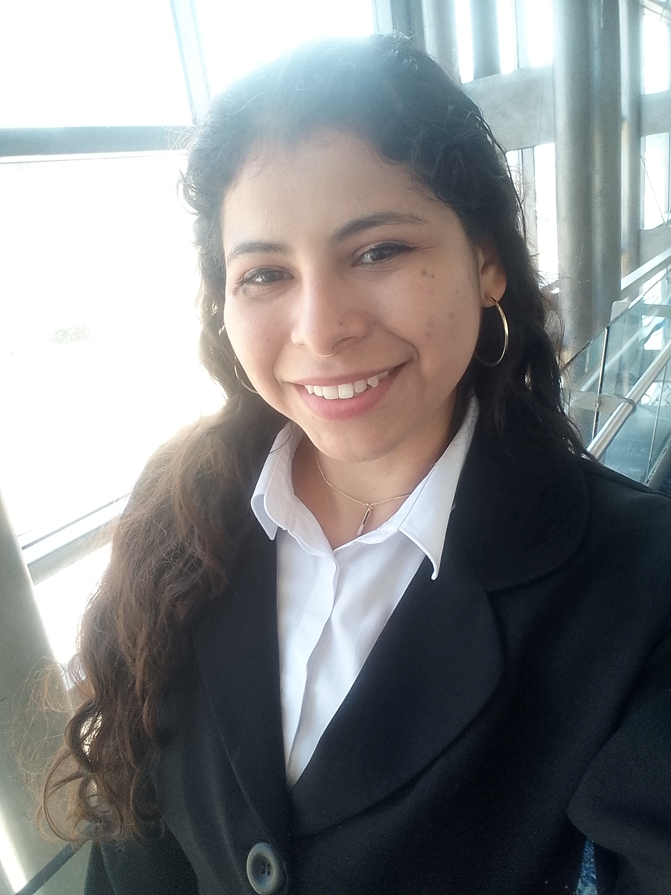

Dánae De la Cruz Jiménez | WDD 130
Greetings. I'm Dánae De la Cruz, I'm from Mexico, And I live with my family in a small apartment. I like to go to the institute and to the cinema. I work at the MTC, where I help in the cleaning area. When I have free time, I love to draw. I love to share my time with my friends and family... I have a superpower, which is knowing how to listen without judging. Despite haviing a very tight schedule, I always call my family on Sundays because I like to keep them present. I'm a daughter, sister and frined. I'm funny, serious, prudent and shy. I'm curious, artistic, and many other things, but I'm also a student at BYU Pathway Worldwide.